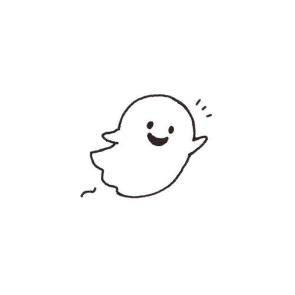
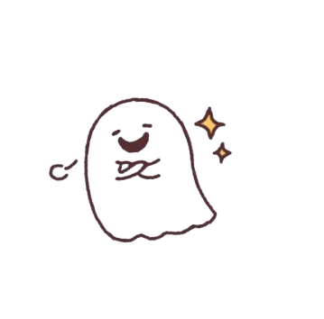
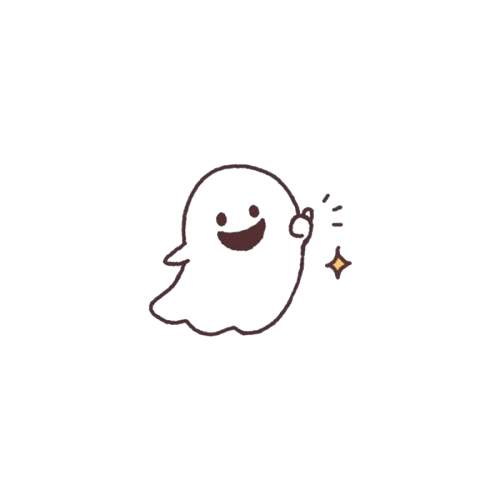

H a i kemal !
Pertama akuu bikin ini ituu untuk kamu karna yaa mau aja siee trus juga lagi itu kann aku sempet pernah bilang bakal buatin web ginian tentang kamuu bukan bukan tentang kamu si lebih ke untuk kamu hehehe
Keren kan cewe mu ini keren laaa pasti itu siii
sudah pasti sekalii


okeh, cukup segitu aja pembukaannya
soalnya ya aku juga bingung gatau mau apa lagii yaa wkwkwk